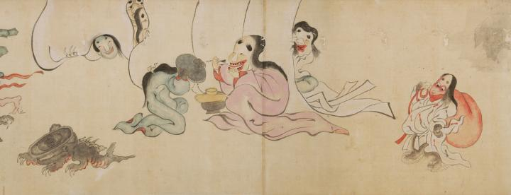

赤い袋を担いだ化物と、女の化物たちが描かれている。女の化物たちは化粧をしたり、白い帳の隙間からこちらを覗いている。
出典：親書誌：U426_nichibunken_0054：百鬼夜行絵巻；ヒャッキヤギョウエマキ／日付：2006／資源識別子：U426_nichibunken_0054_0002_0000
Copyright (c)2010- International Research Center for Japanese Studies, Kyoto, Japan. All rights reserved.